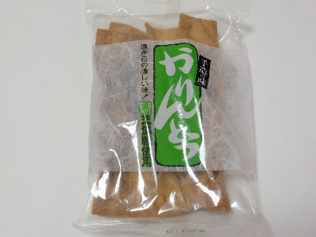
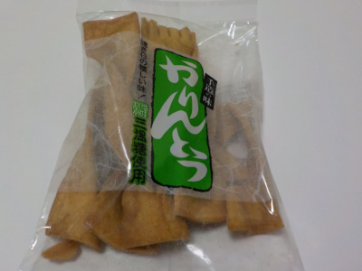

三栄油菓
島根県大田市大田町大田柳井イ847-3
2024//06/02
三栄油菓の大きなかりんとう。

パッケージに懐かしい味って書いてありますが、昔のカリントウはこんな味だったんでしょうか？私はわからないなー。
キャッチコピーって人によって受け止め方が違うので難しいですね。
このカリントウが好きなので、もっと人気が出て欲しいって思っています。
2021//06/05
三栄油菓のかりんとうは硬くておいしい。

ゆめタウン出雲で変わった形のカリントウを買いました。
以前にソフトかりんとうが流行りましたが、これはその逆で硬いかりんとうでした。
ソフトかりんとうは甘くて柔らかいですが、これは硬くて甘さ控えめです。
カリカリ・ポリポリとした硬い食感と、小麦粉と砂糖のシンプルな味がよくあってて美味しかったです。
私は和菓子屋かりんとうとかパン屋かりんとう、ドーナッツかりんとうよりこっちが好きだな。
かりんとうは「硬い」なのかな「固い」なのかな。